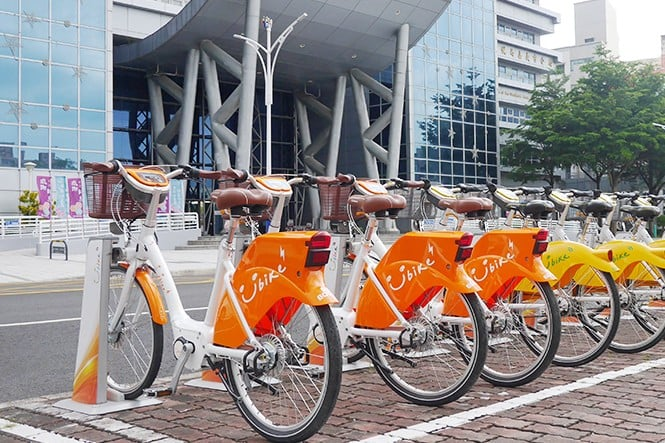
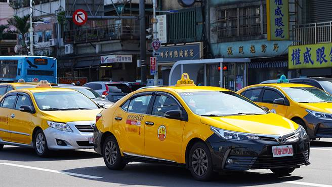

| YouBike | |
 |
YouBike 微笑單車, 推廣民眾騎乘自行車作為短程交通工具，用慢速的方式體驗城市不同時空的迷人風情，不僅提供市民便利的交通工具。 首次於臺北市且自98年起著手規劃建置，提供民眾第一哩及最後一哩的接駁服務，兼具休閒遊憩使用，現已成為市民非常喜愛的交通工具， 資料來源：youbike微笑單車 |
嘉義市市區公車，為一以臺灣嘉義市作為營運主體之公車路線網。目前由國 光客運及捷乘交通聯營。 2022年12月22日，捷乘交通加入嘉義市幸福公車營運。
|
|
|  | 有很多的服務項目，55688集團肇基於2005年，從交通出行服務出發，擴展至生活媒合服務55688 APP。以創新技術及商業模式提升司機營收與生活品質，提供乘客美好有溫度的出行服務體驗。持誠信態度、創新思維達成共好的目標，為合作夥伴創造嶄新價值，並滿足乘客對出行服務品質的要求。
|